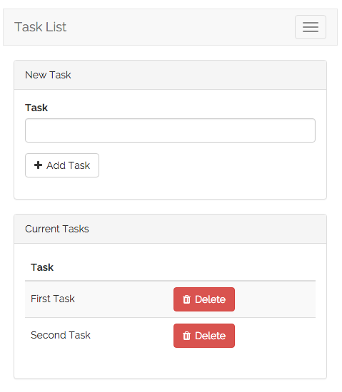

Basic Task List
- Introduction
- Installation
- Prepping The Database
- Routing
- Building Layouts & Views
- Adding Tasks
- Deleting Tasks
Introduction
This quickstart guide provides a basic introduction to the Laravel framework and includes content on database migrations, the Eloquent ORM, routing, validation, views, and Blade templates. This is a great starting point if you are brand new to the Laravel framework or PHP frameworks in general. If you have already used Laravel or other PHP frameworks, you may wish to consult one of our more advanced quickstarts.
To sample a basic selection of Laravel features, we will build a simple task list we can use to track all of the tasks we want to accomplish. In other words, the typical "to-do" list example. The complete, finished source code for this project is available on GitHub.
Installation
Installing Laravel
Of course, first you will need a fresh installation of the Laravel framework. You may use the Homestead virtual machine or the local PHP environment of your choice to run the framework. Once your local environment is ready, you may install the Laravel framework using Composer:
composer create-project laravel/laravel quickstart --prefer-distInstalling The Quickstart (Optional)
You're free to just read along for the remainder of this quickstart; however, if you would like to download the source code for this quickstart and run it on your local machine, you may clone its Git repository and install its dependencies:
git clone https://github.com/laravel/quickstart-basic quickstart
cd quickstart
composer install
php artisan migrateFor more complete documentation on building a local Laravel development environment, check out the full Homestead and installation documentation.
Prepping The Database
Database Migrations
First, let's use a migration to define a database table to hold all of our tasks. Laravel's database migrations provide an easy way to define your database table structure and modifications using fluent, expressive PHP code. Instead of telling your team members to manually add columns to their local copy of the database, your teammates can simply run the migrations you push into source control.
So, let's build a database table that will hold all of our tasks. The Artisan CLI can be used to generate a variety of classes and will save you a lot of typing as you build your Laravel projects. In this case, let's use the make:migration command to generate a new database migration for our tasks table:
php artisan make:migration create_tasks_table --create=tasksThe migration will be placed in the database/migrations directory of your project. As you may have noticed, the make:migration command already added an auto-incrementing ID and timestamps to the migration file. Let's edit this file and add an additional string column for the name of our tasks:
<?php
use Illuminate\Database\Schema\Blueprint;
use Illuminate\Database\Migrations\Migration;
class CreateTasksTable extends Migration
{
/**
* Run the migrations.
*
* @return void
*/
public function up()
{
Schema::create('tasks', function (Blueprint $table) {
$table->increments('id');
$table->string('name');
$table->timestamps();
});
}
/**
* Reverse the migrations.
*
* @return void
*/
public function down()
{
Schema::drop('tasks');
}
}To run our migration, we will use the migrate Artisan command. If you are using Homestead, you should run this command from within your virtual machine, since your host machine will not have direct access to the database:
php artisan migrateThis command will create all of our database tables. If you inspect the database tables using the database client of your choice, you should see a new tasks table which contains the columns defined in our migration. Next, we're ready to define an Eloquent ORM model for our tasks!
Eloquent Models
Eloquent is Laravel's default ORM (object-relational mapper). Eloquent makes it painless to retrieve and store data in your database using clearly defined "models". Usually, each Eloquent model corresponds directly with a single database table.
So, let's define a Task model that corresponds to our tasks database table we just created. Again, we can use an Artisan command to generate this model. In this case, we'll use the make:model command:
php artisan make:model TaskThe model will be placed in the app directory of your application. By default, the model class is empty. We do not have to explicitly tell the Eloquent model which table it corresponds to because it will assume the database table is the plural form of the model name. So, in this case, the Task model is assumed to correspond with the tasks database table. Here is what our empty model should look like:
<?php
namespace App;
use Illuminate\Database\Eloquent\Model;
class Task extends Model
{
//
}We'll learn more about how to use Eloquent models as we add routes to our application. Of course, feel free to consult the complete Eloquent documentation for more information.
Routing
Stubbing The Routes
Next, we're ready to add a few routes to our application. Routes are used to point URLs to controllers or anonymous functions that should be executed when a user accesses a given page. By default, all Laravel routes are defined in the app/Http/routes.php file that is included in every new project.
For this application, we know we will need at least three routes: a route to display a list of all of our tasks, a route to add new tasks, and a route to delete existing tasks. So, let's stub all of these routes in the app/Http/routes.php file:
<?php
use App\Task;
use Illuminate\Http\Request;
/**
* Show Task Dashboard
*/
Route::get('/', function () {
//
});
/**
* Add New Task
*/
Route::post('/task', function (Request $request) {
//
});
/**
* Delete Task
*/
Route::delete('/task/{task}', function (Task $task) {
//
});Note: If your copy of Laravel has a
RouteServiceProviderthat already includes the default routes file within thewebmiddleware group, you do not need to manually add the group to yourroutes.phpfile.
Displaying A View
Next, let's fill out our / route. From this route, we want to render an HTML template that contains a form to add new tasks, as well as a list of all current tasks.
In Laravel, all HTML templates are stored in the resources/views directory, and we can use the view helper to return one of these templates from our route:
Route::get('/', function () {
return view('tasks');
});Passing tasks to the view function will create a View object instance that corresponds to the template in resources/views/tasks.blade.php. Of course, we need to actually define this view, so let's do that now!
Building Layouts & Views
This application only has a single view which contains a form for adding new tasks as well as a listing of all current tasks. To help you visualize the view, here is a screenshot of the finished application with basic Bootstrap CSS styling applied:

Defining The Layout
Almost all web applications share the same layout across pages. For example, this application has a top navigation bar that would be typically present on every page (if we had more than one). Laravel makes it easy to share these common features across every page using Blade layouts.
As we discussed earlier, all Laravel views are stored in resources/views. So, let's define a new layout view in resources/views/layouts/app.blade.php. The .blade.php extension instructs the framework to use the Blade templating engine to render the view. Of course, you may use plain PHP templates with Laravel. However, Blade provides convenient short-cuts for writing clean, terse templates.
Our app.blade.php view should look like the following:
<!-- resources/views/layouts/app.blade.php -->
<!DOCTYPE html>
<html lang="en">
<head>
<title>Laravel Quickstart - Basic</title>
<!-- CSS And JavaScript -->
</head>
<body>
<div class="container">
<nav class="navbar navbar-default">
<!-- Navbar Contents -->
</nav>
</div>
@yield('content')
</body>
</html>Note the @yield('content') portion of the layout. This is a special Blade directive that specifies where all child pages that extend the layout can inject their own content. Next, let's define the child view that will use this layout and provide its primary content.
Defining The Child View
Next, we need to define a view that contains a form to create a new task as well as a table that lists all existing tasks. Let's define this view in resources/views/tasks.blade.php.
We'll skip over some of the Bootstrap CSS boilerplate and only focus on the things that matter. Remember, you can download the full source for this application on GitHub:
<!-- resources/views/tasks.blade.php -->
@extends('layouts.app')
@section('content')
<!-- Bootstrap Boilerplate... -->
<div class="panel-body">
<!-- Display Validation Errors -->
@include('common.errors')
<!-- New Task Form -->
<form action="{{ url('task') }}" method="POST" class="form-horizontal">
{{ csrf_field() }}
<!-- Task Name -->
<div class="form-group">
<label for="task" class="col-sm-3 control-label">Task</label>
<div class="col-sm-6">
<input type="text" name="name" id="task-name" class="form-control">
</div>
</div>
<!-- Add Task Button -->
<div class="form-group">
<div class="col-sm-offset-3 col-sm-6">
<button type="submit" class="btn btn-default">
<i class="fa fa-plus"></i> Add Task
</button>
</div>
</div>
</form>
</div>
<!-- TODO: Current Tasks -->
@endsectionA Few Notes Of Explanation
Before moving on, let's talk about this template a bit. First, the @extends directive informs Blade that we are using the layout we defined in resources/views/layouts/app.blade.php. All of the content between @section('content') and @endsection will be injected into the location of the @yield('content') directive within the app.blade.php layout.
The @include('common.errors') directive will load the template located at resources/views/common/errors.blade.php. We haven't defined this template, but we will soon!
Now we have defined a basic layout and view for our application. Remember, we are returning this view from our / route like so:
Route::get('/', function () {
return view('tasks');
});Next, we're ready to add code to our POST /task route to handle the incoming form input and add a new task to the database.
Adding Tasks
Validation
Now that we have a form in our view, we need to add code to our POST /task route in app/Http/routes.php to validate the incoming form input and create a new task. First, let's validate the input.
For this form, we will make the name field required and state that it must contain less than 255 characters. If the validation fails, we will redirect the user back to the / URL, as well as flash the old input and errors into the session. Flashing the input into the session will allow us to maintain the user's input even when there are validation errors:
Route::post('/task', function (Request $request) {
$validator = Validator::make($request->all(), [
'name' => 'required|max:255',
]);
if ($validator->fails()) {
return redirect('/')
->withInput()
->withErrors($validator);
}
// Create The Task...
});The $errors Variable
Let's take a break for a moment to talk about the ->withErrors($validator) portion of this example. The ->withErrors($validator) call will flash the errors from the given validator instance into the session so that they can be accessed via the $errors variable in our view.
Remember that we used the @include('common.errors') directive within our view to render the form's validation errors. The common.errors will allow us to easily show validation errors in the same format across all of our pages. Let's define the contents of this view now:
<!-- resources/views/common/errors.blade.php -->
@if (count($errors) > 0)
<!-- Form Error List -->
<div class="alert alert-danger">
<strong>Whoops! Something went wrong!</strong>
<br><br>
<ul>
@foreach ($errors->all() as $error)
<li>{{ $error }}</li>
@endforeach
</ul>
</div>
@endifNote: The
$errorsvariable is available in every Laravel view. It will simply be an empty instance ofViewErrorBagif no validation errors are present.
Creating The Task
Now that input validation is handled, let's actually create a new task by continuing to fill out our route. Once the new task has been created, we will redirect the user back to the / URL. To create the task, we may use the save method after creating and setting properties on a new Eloquent model:
Route::post('/task', function (Request $request) {
$validator = Validator::make($request->all(), [
'name' => 'required|max:255',
]);
if ($validator->fails()) {
return redirect('/')
->withInput()
->withErrors($validator);
}
$task = new Task;
$task->name = $request->name;
$task->save();
return redirect('/');
});Great! We can now successfully create tasks. Next, let's continue adding to our view by building a list of all existing tasks.
Displaying Existing Tasks
First, we need to edit our / route to pass all of the existing tasks to the view. The view function accepts a second argument which is an array of data that will be made available to the view, where each key in the array will become a variable within the view:
Route::get('/', function () {
$tasks = Task::orderBy('created_at', 'asc')->get();
return view('tasks', [
'tasks' => $tasks
]);
});Once the data is passed, we can spin through the tasks in our tasks.blade.php view and display them in a table. The @foreach Blade construct allows us to write concise loops that compile down into blazing fast plain PHP code:
@extends('layouts.app')
@section('content')
<!-- Create Task Form... -->
<!-- Current Tasks -->
@if (count($tasks) > 0)
<div class="panel panel-default">
<div class="panel-heading">
Current Tasks
</div>
<div class="panel-body">
<table class="table table-striped task-table">
<!-- Table Headings -->
<thead>
<th>Task</th>
<th> </th>
</thead>
<!-- Table Body -->
<tbody>
@foreach ($tasks as $task)
<tr>
<!-- Task Name -->
<td class="table-text">
<div>{{ $task->name }}</div>
</td>
<td>
<!-- TODO: Delete Button -->
</td>
</tr>
@endforeach
</tbody>
</table>
</div>
</div>
@endif
@endsectionOur task application is almost complete. But, we have no way to delete our existing tasks when they're done. Let's add that next!
Deleting Tasks
Adding The Delete Button
We left a "TODO" note in our code where our delete button is supposed to be. So, let's add a delete button to each row of our task listing within the tasks.blade.php view. We'll create a small single-button form for each task in the list. When the button is clicked, a DELETE /task request will be sent to the application:
<tr>
<!-- Task Name -->
<td class="table-text">
<div>{{ $task->name }}</div>
</td>
<!-- Delete Button -->
<td>
<form action="{{ url('task/'.$task->id) }}" method="POST">
{{ csrf_field() }}
{{ method_field('DELETE') }}
<button type="submit" class="btn btn-danger">
<i class="fa fa-trash"></i> Delete
</button>
</form>
</td>
</tr>A Note On Method Spoofing
Note that the delete button's form method is listed as POST, even though we are responding to the request using a Route::delete route. HTML forms only allow the GET and POST HTTP verbs, so we need a way to spoof a DELETE request from the form.
We can spoof a DELETE request by outputting the results of the method_field('DELETE') function within our form. This function generates a hidden form input that Laravel recognizes and will use to override the actual HTTP request method. The generated field will look like the following:
<input type="hidden" name="_method" value="DELETE">Deleting The Task
Finally, let's add logic to our route to actually delete the given task. We can use implicit model binding to automatically retrieve the Task model that corresponds to the {task} route parameter.
In our route callback, we will use the delete method to delete the record. Once the record is deleted, we will redirect the user back to the / URL:
Route::delete('/task/{task}', function (Task $task) {
$task->delete();
return redirect('/');
});